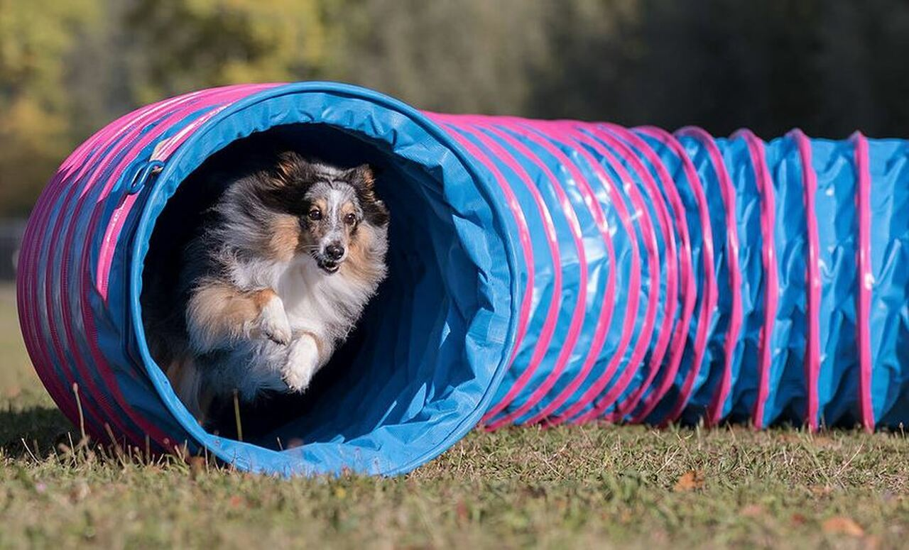
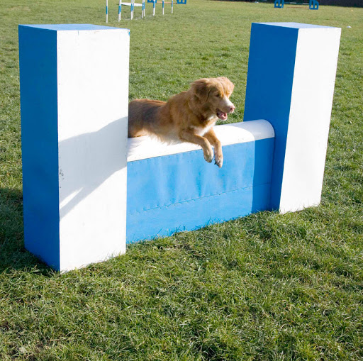
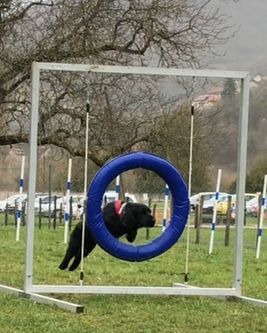
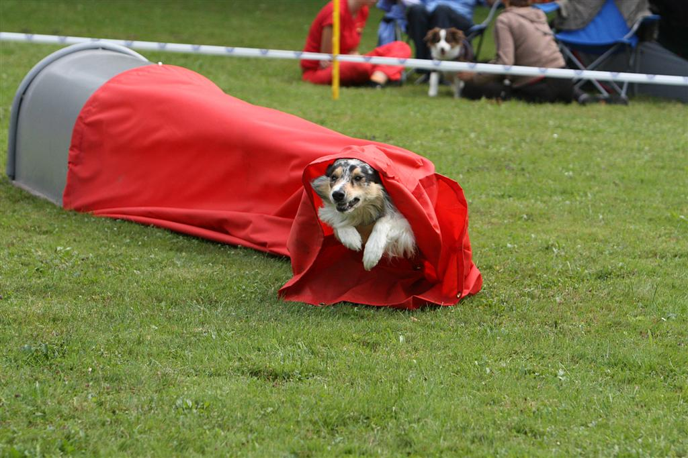
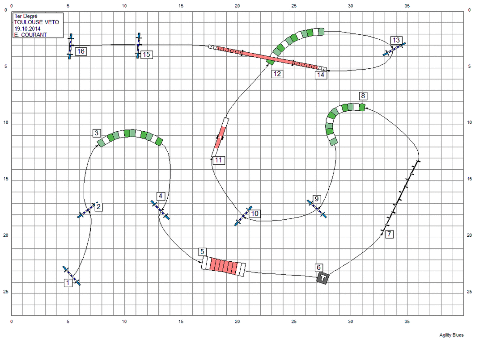
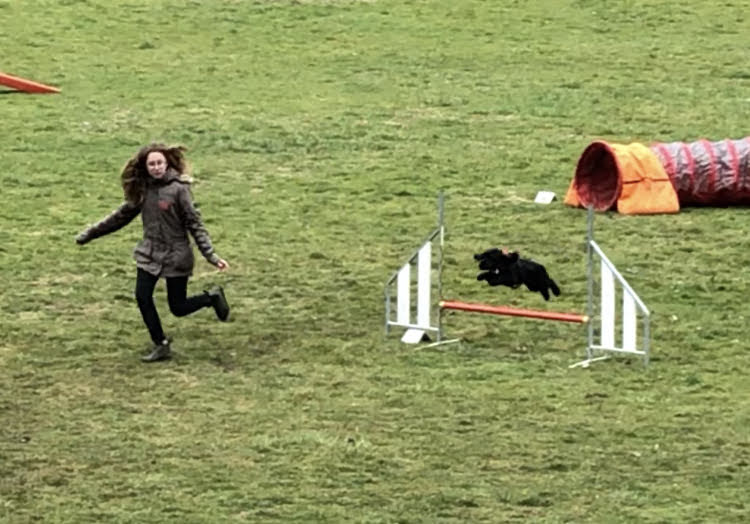

| Accueil | Présentation | L'agility | Aventures | Famille | Réseaux | Autres |
|---|
⩪Introduction:
L'agility (nommé aussi l'agilité en français) est une activité sportive canine, entre un chien et son propriétaire, sur un parcours avec différents obstacles limiter d'un temps impartit par rapport à la taille du chien (A, ou B et D, ou C).
Soit un règlement est à respecter : (pour les concours, mais pas pour les entrainements, par exemple ce que je fais). Mais il y a aussi des numéro pour les obstacles, allant du 1 (le départ) jusqu'à 15, 16... (l'arrivée).
Voir le règlement de 2018 : Cliquez ici
Ce sport est pour tour les chiens il faut que cette activité soit aimée par le chien; chaque chien est fait pour une activité!!
Pour ceux qui ne connaîtraient pas (c’est encore possible???).
Il existe donc plusieurs obstacles :
⨀ Les plus faciles : la haie, le tunnel, le mur, le pneu, l'oxer, et la longueur.



⨀ Les plus compliqués : le slalom, la chaussette, le pont, le "A", la balance, la table.


⩥ Un exemple pour illustrer un parcours d'agilitiste: 
Je pratique cette activité depuis maintenant 2ans et demi (en 2018). J 'y vais tout les samedi matin de 9h à 12h, dans mon club "BesançonClubCanin" depuis 2016. Le site: Cliquez ici
Avant de faire l'agility, j'ai travaillé l'éducation de Monroe (il faut que le chien est au moins 1 an et demi pour pratiquer). A ses 6 mois, nous sommes allées à l'école du chiot puis, à l'éducation pendant 2 ans et enfin l'agility.
Il existe d'autres disciplines canine biensûr : le dogdancing, attelage, la chasse...
J'essaye de préparer mon examen de pass agility: c'est un papier que tu dois avoir pour participer à des concours; ainsi que le CAESC : c'est un autre examen qui montre si ton chien t'écoute et que vous formez une bonne équipe.
Mais malheureusement à cause du COVID19, encore, le dossier traîne un peu...
Grâce aux concours, nous pouvons gagner des coupes, des médailles, des cadeaux mais aussi des rencontres, une bonne expérience et/ou constructive, qui crée de beaux et inoubliables souvenirs. J'ai un exemple, car j'ai aidé lors d'une manifestation (compétition d'agilty) c'était génial! Je regardais les participants, leur préstations, j'ai appris comment nous installons un parcours etc...
Aussi lorsque que j'étais plus jeune, je suis allée avec des membres du club, au centre ville pour aider une association, nous faisions des démonstartions avec nos chiens, calins gratuits, photos...etc (Nous et les chiens étions déguisés car c'était Noel) J'ai également fait une démonstration d'agility au salon de Micropolis à Besançon!
Voici quelques photos de mes entrainements d'agility 😊💖 
Sur une haie dans un parcours de jumping 09/03/2019 💚